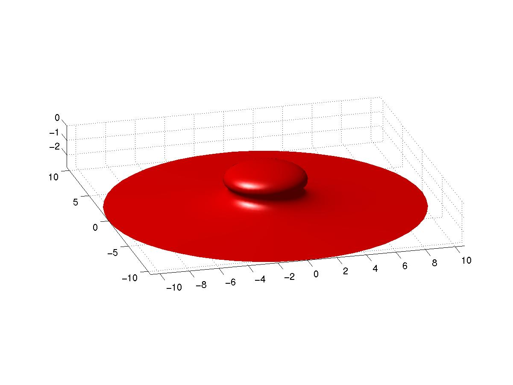

Yorkshire and Durham |
 |
Geometry Days |
There will be three Yorkshire and Durham Geometry Days during the 2018/19 academic year, organized by geometers at the Universities of Durham, Leeds and York. The local organizers are:
Yorkshire and Durham Geometry Days are supported by a Scheme 3 grant from the London Mathematical Society. Previous years' programmes may be viewed here.
Visitors to the University of Leeds may find the following webpages useful: